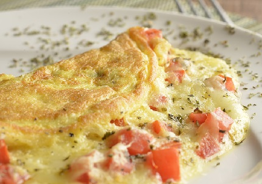
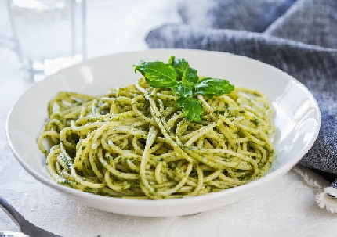
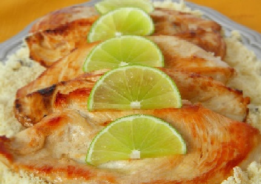

Omelete de Queijo e Tomate

Ingredientes:
2 ovos
1/4 de xícara de queijo ralado (qualquer queijo de sua preferência)
1/4 de tomate picado
Sal e pimenta a gosto
Instruções:
Bata os ovos em uma tigela e tempere com sal e pimenta.
Aqueça uma frigideira antiaderente em fogo médio e adicione os ovos batidos.
Cozinhe por cerca de 2 minutos até que a omelete esteja quase firme.
Adicione o queijo e o tomate picado por cima.
Dobre a omelete ao meio e cozinhe por mais 1-2 minutos, até que o queijo derreta.
Sirva imediatamente.
Macarrão com Molho Pesto

Ingredientes:
100g de macarrão de sua escolha
1/2 xícara de folhas de manjericão fresco
2 colheres de sopa de pinhões (ou nozes)
1 dente de alho
2 colheres de sopa de queijo parmesão ralado
3 colheres de sopa de azeite de oliva
Sal e pimenta a gosto
Instruções:
Cozinhe o macarrão de acordo com as instruções da embalagem.
Enquanto o macarrão cozinha, faça o molho pesto. Em um processador de alimentos, misture o manjericão, pinhões, alho, queijo parmesão, azeite, sal e pimenta até obter uma mistura homogênea.
Escorra o macarrão e misture-o com o molho pesto.
Sirva imediatamente, com mais queijo parmesão por cima, se desejar.
Frango Grelhado com Limão e Ervas

Ingredientes:
2 peitos de frango
Suco de 1 limão
2 colheres de sopa de azeite de oliva
1 dente de alho picado
1 colher de chá de ervas secas (como alecrim, tomilho ou manjericão)
Sal e pimenta a gosto
Instruções:
Tempere os peitos de frango com suco de limão, azeite de oliva, alho picado, ervas secas, sal e pimenta.
Aqueça uma grelha ou frigideira em fogo médio-alto.
Grelhe o frango por cerca de 6-7 minutos de cada lado, ou até que esteja cozido por completo e tenha marcas de grelha.
Sirva o frango grelhado com fatias de limão por cima e acompanhamentos de sua escolha.